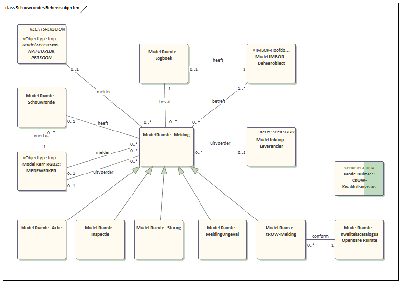

Ruimtelijk Domein
Basisobjecttypes
Standaarden
In het de uitwerking van ruimtelijk domein komt een aantal landelijke en internationale gegevensstandaarden samen, welke niet naadloos op elkaar aansluiten:
- GML 3.2.1. (Geography Markup Language), GML beschrijft hoe geografische locaties, lijnen, vlakken en combinaties daartussen vastgelegd en uitgewisseld dienen te worden. GML 3.2.1 is gestandaardiseerd bij het OGC en, daar OGC en ISO met elkaar samenwerken, tevens gestandaardiseerd als ISO 19136:2007. De ISO variant is opgenomen als nationale standaard in de Pas-toe-of-leg-uit-lijst van het Forum Standaardisatie.
- NEN3610: 2011 (Basismodel geo-informatie). Het Basismodel geo-informatie. Het bevat de termen, definities, relaties en algemene regels voor de uitwisseling van informatie over ruimtelijke objecteninformatiemodellen). De standaard NEN3610 staat op de Pas-toe-of-leg-uit-lijst van het Forum Standaardisatie.
- IMBGT/IMGeo versie 2.1.1: (Informatiemodel Basisregistratie grootschalige Topografie/ Informatiemodel Geo). De kern van dit model (BGT) definieert informatie zoals die via de BGT beschikbaar is, en als basis/ondergrond dient voor de overige modellen.
- IMBAG versie 0.99: (Gegevenscatalogus Basisregistratie Adressen en Gebouwen). De Basisregistraties Adressen en Gebouwen (BAG) bevatten gegevens van alle adressen en gebouwen in Nederland. In de Gegevenscatalogus BAG zijn de afspraken vastgelegd om digitale uitwisseling mogelijk te maken. Het informatiemodel voor de BAG is geënt op de principes van NEN3610.
- RSGB 3.0: Het Referentiemodel Stelsel van Gemeentelijke Basisgegevens is de semantische standaard voor gemeentelijke basisgegevens. Het RSGB specificeert de basis- en kerngegevens waaraan gemeentebreed behoefte is.
- IMBOR versie 2018-1: In het IMBOR zijn landelijke afspraken gemaakt over de objectgegevens voor het beheer van de openbare ruimte.
Voor zover van toepassing op Delft wordt zoveel mogelijk van deze standaarden gebruik gemaakt. Ook is er een aantal objecttypen die (nog) niet in deze modellen voorkomen, zoals het IMKL (Informatiemodel kabels en leidingen), IMWV (Informatiemodel Wegen en verkeer) en het IMWA (Informatiemodel Water). In de figuur hierna is te zien hoe de samenhang van deze standaarden in het Gemeentelijk Gegevensmodel is uitgewerkt.

Geo-objecten
Geo-objecten zijn objecttypes die informatie bevatten over objecten in de ruimte, en hoe deze afgebeeld kunnen worden. In IMGeo en het RSGB zijn Geo-objecttypes opgenomen. De RSGB 3.0 bevat weinig tot geen informatie over het beheer van de objecten in de openbare ruimte, dit is opgenomen in IMBOR. Het gemeentelijk gegevensmodel bouwt voort op de RSGB en vult aan met andere standaarden als deze niet in de RSGB zijn opgenomen. Als er geen standaard is wordt het gemeentelijk gegevensmodel aangevuld met nieuwe objecttypen. Om aansluiting met de overige ruimtelijke standaarden te houden worden GML en NEN3610 toegepast.
Er is gekozen voor RSGB versie 3.0 (nog in concept), omdat daar IMGeo en IMBAG in is verwerkt. Daaraan is een generiek nieuw objecttype toegevoegd, dat niet in RSGB 3.0 is opgenomen: Geo-Object. De benodigde onderdelen uit RSGB 3.0 zijn toegevoegd aan het model Kern.

In voorgaand figuur is te zien hoe alle Geo-objecten uit de RSGB zijn afgeleid van het objecttype Geo-Object, en hoe deze is gekoppeld aan het objecttype Beheerobject uit IMBOR. De getoonde objecttypen zijn allemaal overgenomen uit IMGeo, waardoor de aansluiting is gemaakt met de BGT.
In RSGB 3.0 zijn de volgende objecttypen niet overgenomen uit IMGeo: Bak, Bord, Bouwwerk, Installatie, Kast, Mast, OverigeConstructie, Paal, Put, RegistratiefGebied, Sensor, Straatmeubilair, Waterinrichtingselement, Weginrichtingselement. Hier hebben de ontwerpers en goedkeurders van RSGB 3.0 voor gekozen omdat men vond dat deze geen volwaardige representatie ‘verdienden’. Hiervoor in de plaatse is het generieke objecttype ‘Inrichtingselement’ aan het RSGB toegevoegd. Al deze objecttypes dienen te worden gezien als ‘Inrichtingselement’.
Beheerobjecten
Beheerobjecten zijn objecttypes uit de openbare ruimte met hun beheeraspecten, dit in tegenstelling tot de Geo-objecten die iets zeggen over het afbeelden van objecten op een kaart. Beheerobjecten zijn afgeleid uit IMBOR, en die objecttypes waar Delft beheer over voert of anderszins een rol spelen zijn overgenomen

In voorgaande figuur is te zien welke beheerobjecten uit IMBOR in het gemeentelijk gegevensmodel zijn overgenomen, en hoe deze zich verhouden tot de Geo-objecten. Hier zijn alleen de hoofdobjecten overgenomen, die allemaal afgeleid zijn van beheerobject. Er is ook een set beheerobjecten die weer zijn afgeleid van deze hoofdobjecten. Het betreft de volgende objecttypes:
Aansluitput, Abri, AED, Afvalbak, Afwateringsgebied, Bank, Bemalingsgebied, Bergingsbassin, Beschoeiing, Boom, Brug, Container, Debietmeter, Dek, Depot, Detectielus, Drainageput, Drinkkraan, Drukknoppaal, Ecoduct, Fietsparkeervoorziening, Filterput, Flyover, Geluidsscherm, Gemaal, Halteplaats, Hondenpoeppaal, Hoogtebegrenzer, Hotspot, Huisnummerbord, Infiltratieput, InklapbarePaal, Inzamelpunt, Kademuur, Keermuur, Kering, Klimplant, Klok, Kolk, Landhoofd, Lichtmast,Ligplaatsstrook, Mottobord, OndergrondseContainer, Onttrekkingsput, OV-kast, Overstortconstructie, Park, Parkeerautomaat, Parkeerbeugel, Parkeerdek, Parkeerverwijssysteem, Picknicktafel, Pijlbak, Plaatsnaambord, Pomp, Putdeksel, Recreatie, Regenmeter, Rioleringsgebied, Rioolkast, Rioolput, Risicogebied, Rooster, Sloof, SolitairePlant, Speelterrein, Speeltoestel, Sportcomplex, Sportterrein, Steiger, Straatnaambord, Stuwgebied, Toilet, Trap, Tunnelbak, Tunnelbuis, Tunnelgang, Tunnelwand, Uitlaatconstructie, Urinoir, Vacuümopslagtank, Veldverlichting, Verkeersbord, Verkeersbordpaal, Verkeersdrempel, Verkeerskast, Verkeerslichtmast, Verkeerslichtportaal, Viaduct, Vlonder, VRI-locatie, VRI-paal, Walstroomkast, Zandkist, Zoutbak en Zuiveringsgebied
Deze staan wel in het model opgenomen, maar het voert te ver om deze hier allemaal op te nemen.
Beheerobjecten vs Geo-objecten
In de volgende figuur is de verhouding tussen de Geo-objecten en de beheerobjecten te zien.

Er zijn twee perspectieven van een boom afgebeeld. In het BGT/IMGeo (RSGB 3.0) domein worden attributen getoond die te maken hebben met het op de juiste plek kunnen afbeelden van de boom. In het beheerdeel worden attributen bijgehouden die nodig zijn om de boom te kunnen beheren. In de volgende figuur is te zien welke verschillende soorten informatie over hetzelfde objecttype wordt bijgehouden.

Objecttypes en Gemeentelijke Informatie
Schouwen en meldingen
Onderhoud aan de beheerobjecten wordt uitgevoerd door middel van schouwen. Hiervoor kent het Gemeentelijk Gegevensmodel een aantal objecttypen naast de beheerobjecten. Deze zijn uitgewerkt in de volgende figuur.
Een ‘Schouwronde’ kan meerdere meldingen hebben. Ieder van die meldingen heeft betrekking op een ‘beheerobject’, en beheerobjecten hebben een ‘logboek’ waar de meldingen in worden vastgelegd. Een ‘melding’ heeft een melder en een leverancier die de melding gaat verhelpen. Er zijn verschillende soorten meldingen:
- CROW-melding, volgens de CROW-systematiek.
- Melding Ongeval, alleen bij speeltoestellen waar ongevallen per speeltoestel bijgehouden moeten worden.
- Storing, meldingen bij verkeerslichten en straatverlichting, waar storingen in het systeem zelf zichtbaar worden en verholpen worden door een leverancier.
- Inspecties, worden door een inspecteur gedaan en als zodanig gemeld.
- Acties, dit zijn geplande onderhoudsacties.

Schouwrondes worden uitgevoerd binnen arealen, die vallen binnen 1 of meer wijken of buurten.

Opbrekingen
Voor geplande opbrekingen wordt een ‘MOOR-melding’ gedaan (Melding Opbreking Openbare Ruimte). Deze ‘MOOR-melding’ wordt gedaan door de ‘Uitvoerder’ van de graafwerkzaamheden. Een ‘Uitvoerder’ kan een ‘Leverancier’ zijn of een ‘Grondbeheerder’, beiden een ‘Rechtspersoon’. Een aangevraagde ‘Omgevingsvergunning’ kan meerdere MOOR-meldingen verplichten. Nadat de graafwerkzaamheden zijn uitgevoerd wordt een inspectie gedaan voor een ‘Medewerker’ van de gemeente, waarvan een ‘proces verbaal’ wordt opgemaakt. Dit ‘proces verbaal’ is vastgelegd in een ‘Document’.

Woningbouwprojecten
Het woningbouwproject die in het kader van gebiedsbeheer worden uitgevoerd worden los geadministreerd. Woningbouwprojecten kunnen binnen een ‘Programma’ vallen. Ieder ‘woningbouwproject’ levert een aantal woningen op. Deze woningen zijn 1 van 3 soorten: koopwoningen, huurwoningen of studentenwoningen. Een ‘Woningbouwproject’ heeft een of meer projectontwikkelaars en kan een ‘projectleider’ hebben.

Energielabels en oppervlakten van woningen zijn volgens vooraf gedefinieerde lijsten/enumeraties.
Basisregistraties
BAG (Basisregistratie, Adressen en Gebouwen)
Het IMBAG (Informatiemodel basisregistratie, adressen en gebouwen) is overgenomen in RSGB 3.0. Om deze reden zijn de objecttypes hiervoor ontleend aan het RSGB 3.0.
Het betreft allemaal objecttypen die vanuit de BAG adresseerbaar zijn, en dus een BAG-identificatie hebben. Ook hebben alle objecten een reëel adres met postcode en huisnummer. Met het meest generieke objecttype ‘Adresseerbaar Object Aanduiding ’ dat alle onderliggende objecttypen een reëel adres geeft, daaronder twee generieke objecttypes: ‘Nummeraanduiding’ en ‘Overig Adresseerbaar object aanduiding’, waarmee alle objecttypes een BAG-id meekrijgen. Zie hiervoor de volgende Figuur.

In de volgende figuur zijn alle BAG-objecttypes in samenhang afgebeeld: de drie generieke objecttypes en de vijf concrete objecttypes.

Alle vijf concrete objecttypes zijn werkelijke adresseerbare objecten die in de BAG terug te vinden zijn. Allemaal “door het bevoegde gemeentelijke orgaan als zodanig formeel aangewezen”.
Ligplaats: plaats in het water al dan niet aangevuld met een op de oever aanwezig terrein of een gedeelte daarvan, die bestemd is voor het permanent afmeren van een voor woon-, bedrijfsmatige of recreatieve doeleinden geschikt vaartuig.
Standplaats: terrein of gedeelte daarvan dat bestemd is voor het permanent plaatsen van een niet direct en niet duurzaam met de aarde verbonden en voor woon -, bedrijfsmatige, of recreatieve doeleinden geschikte ruimte.
Verblijfsobject: de kleinste binnen één of meer panden gelegen en voor woon-, bedrijfsmatige, of recreatieve doeleinden geschikte eenheid van gebruik die ontsloten wordt via een eigen afsluitbare toegang vanaf de openbare weg, een erf of een gedeelde verkeersruimte, onderwerp kan zijn van goederenrechtelijke rechtshandelingen en in functioneel opzicht zelfstandig is.
Overig Gebouwd object: de kleinste eenheid van gebruik, geen verblijfsobject zijnde, binnen een bij de totstandkoming functioneel en bouwkundig constructief zelfstandige eenheid die direct en duurzaam met de aarde is verbonden.
Overig benoemd terrein: onbebouwd terrein of een gedeelte daarvan, geen standplaats of gedeelte van een ligplaats zijnde, dat bestemd is voor het gedurende langere tijd verrichten van een maatschappelijke activiteit.
Kadastrale objecten en beperkingen
Kadastrale objecten worden gebruikt voor het toepassen van een zakelijk recht op een object. In de RSGB 3.0 kan een perceel of een appartementsrecht zijn. Een zakelijk recht kan zijn: eigendomsrecht, mede-eigendom, appartementsrecht, recht van vruchtgebruik, recht van gebruik en recht van bewoning, erfdienstbaarheden, erfpacht en recht van opstal. Dit zakelijk recht kan een natuurlijk persoon als rechthebbende/subject hebben of een niet-natuurlijk persoon. In de volgende figuur is uitgewerkt hoe een ‘Zakelijk recht’ rust op een ‘Kadastrale Onroerende Zaak’. Zo’n ‘Kadastrale Onroerende Zaak’ kan van het soort ‘Kadastraal Perceel’ zijn of een ‘Appartementsrecht’, of het kan generiek blijven. Een publiek rechtelijke beperking uit de WKPB wordt gevestigd via een ‘Kadastrale onroerende zaak aantekening’. De verbinding met adresseerbare objecten uit de BAG wordt gelegd via de relatie met het meest generieke type ‘Benoemd Object’. Een ‘Rechtspersoon’ (natuurlijk persoon of bedrijf) heeft een ‘zakelijk recht’ en kan zo bijvoorbeeld het eigendom van een perceel hebben.

Een ‘Kadastrale Mutatie’ kan het vestigen of wijzigen van een zakelijk recht tot gevolg hebben (bijv. eigendomsoverdracht). Een mutatie heeft altijd betrekking op één of meer ‘Kadastrale onroerende zaken’, bij verkoop is het bijv. 1 ‘Kadastrale onroerende zaak’, maar bij splitsing twee of meer.